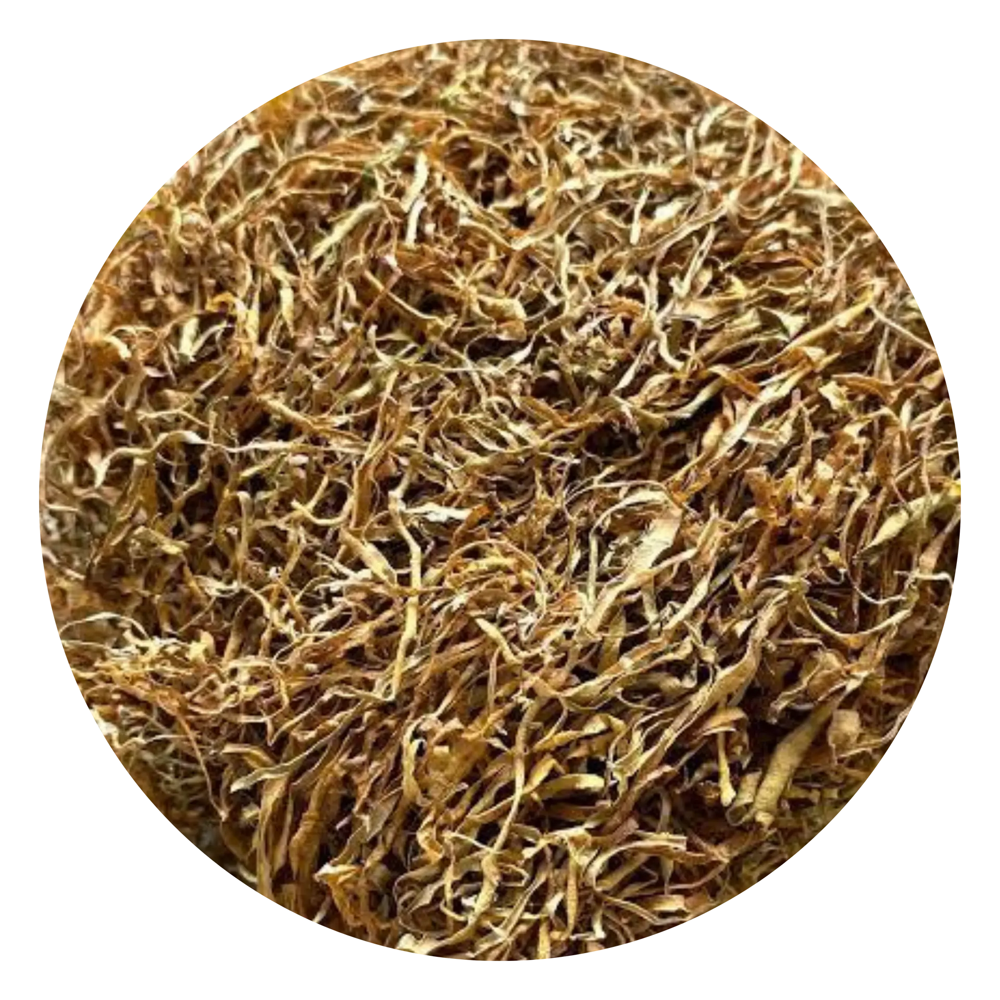

Sourced directly from local farms in Bogor, Indonesia. Natural, chemical-free, and export-ready — trusted by buyers across Sydney, Melbourne, Brisbane, and beyond.
We understand what matters to Australian importers and health-conscious consumers — quality, transparency, and reliable supply.
No artificial preservatives, chemical drying agents, or additives. Just pure sun-dried Beneng taro leaves, preserved the natural way.
Products are hygienically packed in resealable ziplock bags, suitable for long-distance international shipping with 12-month shelf life.
Whether you're a retail customer, health store, restaurant, or bulk importer — we accommodate small and large-volume orders with competitive pricing.
Every batch is traceable back to our partner farms in Bogor, West Java. We believe in transparency from field to packaging.
We've participated in Trade Expo Indonesia (TEI) and have been recognized at the national level for our agricultural product quality.
Direct access to our team via WhatsApp or email. We respond fast and are happy to provide documentation, samples, or custom quotes.

Our dried Beneng taro leaves (Xanthosoma undipes) are harvested at peak maturity from Bogor's local farms, carefully sliced, and naturally sun-dried to preserve colour, texture, and nutritional value.
Beneng taro is a variety native to West Java, rich in dietary fibre, protein, vitamins, and minerals — increasingly sought after in international markets for its versatility in food, herbal, and wellness applications.
We ship to all major Australian cities and regions. Here's what you need to know before placing your order.
We can provide the following upon request:
Australian Biosecurity (DAFF): Dried plant products from Indonesia may be subject to inspection by the Australian Department of Agriculture, Fisheries and Forestry (DAFF). Our products are naturally dried and undergo proper processing to meet phytosanitary requirements. We are happy to provide supporting documentation as needed. Please contact us to discuss compliance requirements specific to your order.
Steep dried leaves in hot water for a natural, earthy herbal infusion.
Use as a natural seasoning, wrap, or flavour base in soups and stews.
Rich in fibre, antioxidants, and minerals — ideal for supplement formulation.
A nutritious natural supplement for livestock, poultry, and small animals.
Studied for blood sugar management, anti-inflammatory, and digestive properties.
Ideal for health stores, Asian grocery retailers, and online sellers in Australia.
Contact our team today for pricing, shipping details, and bulk quotes. We respond quickly and are ready to help.